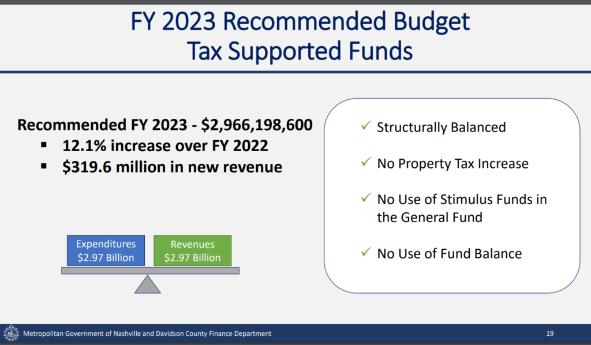
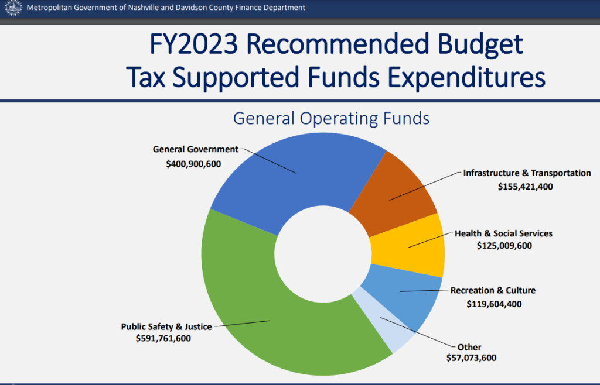
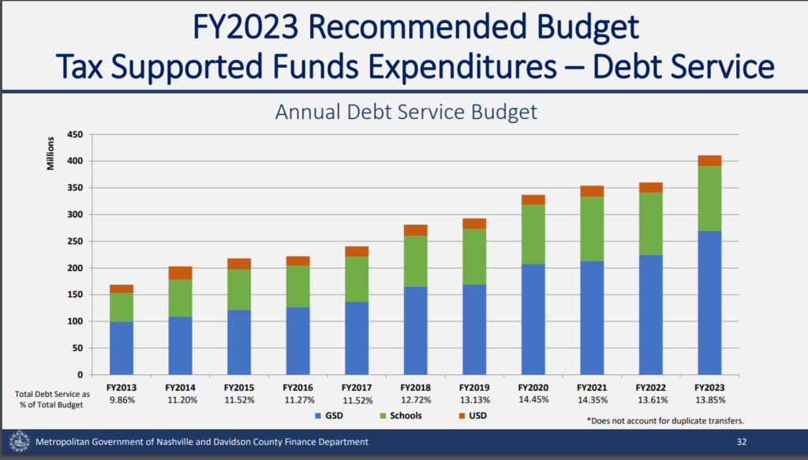
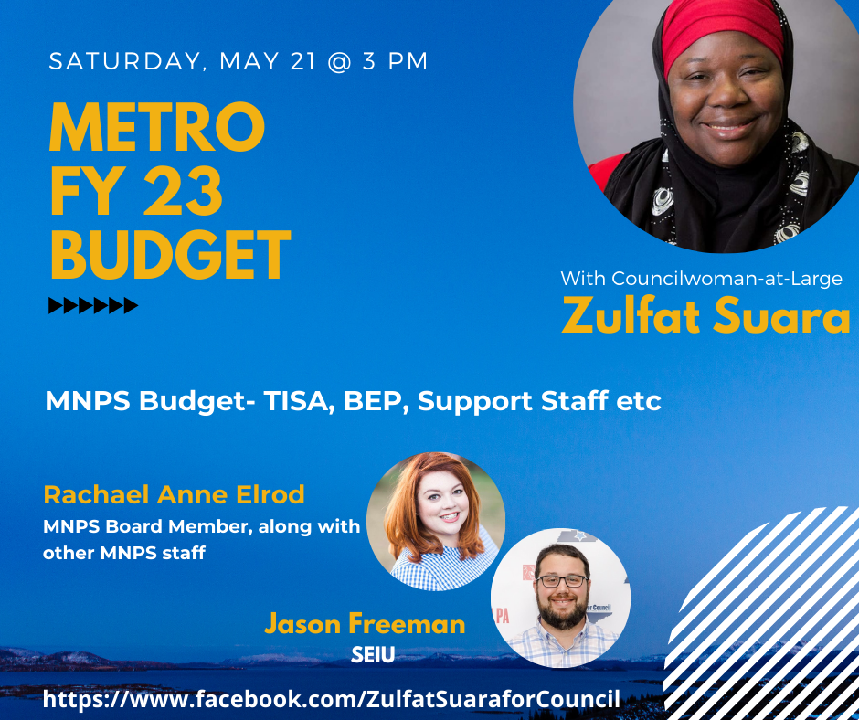
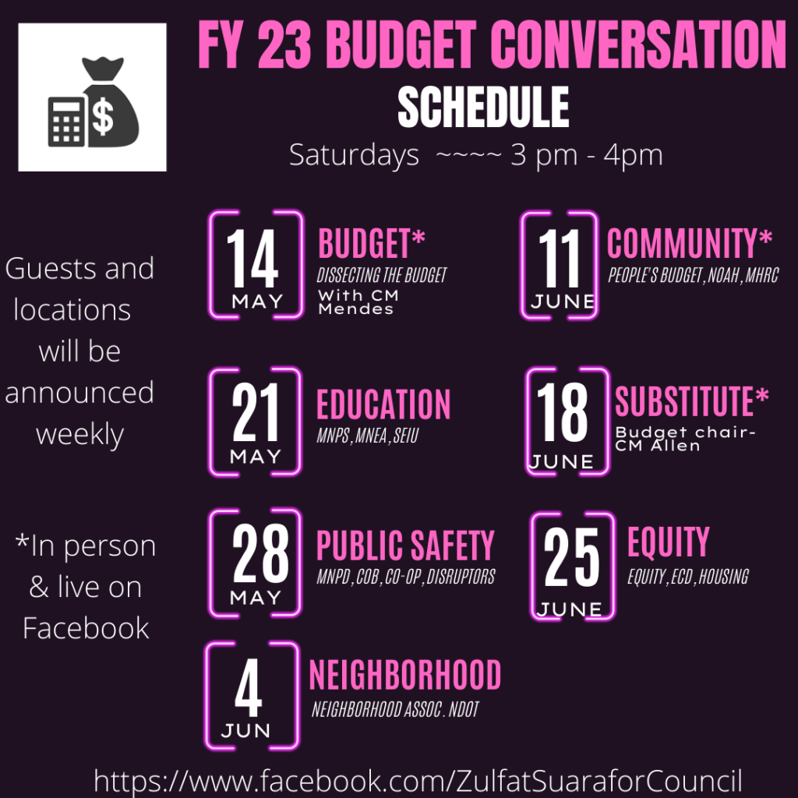

Dissecting Mayor Cooper’s FY 23 Budget
Hello, everyone. It’s hard to believe its already another budget season. The FY23 season started with the Mayor’s State of Metro address. On May 14, I was joined by my colleague and former Budget Chair – CM Bob Mendes as we took a deeper dive into the mayor’s budget. Below is a summary of our conversation.
From 1980-to 2005, the city raised the tax rate every three or four years. This allowed the city to have a buffer of money for the first two years so that when year three rolled around, we could prepare to raise the tax rate. However, when this trend stopped, the result was a dive into the savings. Not only that, the savings started to go down as the city grew, the city was “starving itself of cash” and investments in neighborhood suffered. Now that we are in the cycle, about two years from a tax raise, this is a good time to discuss how the money we have(from the buffer from this cycle) will be used and invested.
Highlights from the Mayor’s Budget
GENERAL OVERVIEW OF THE BUDGET:
What did the mayor decide to do? The mayor choose to invest the buffer in our neighborhoods. As a matter of fact, the FY23 budget is dubbed by the mayor as an investment budget especially in our neighborhoods. This budget allows Metro to invest in our communities, a welcome change from last few years of budgets. In 2020 and 2021, we had crisis budgets as Metro was dealing with state oversight and natural disasters. Last year’s budget was a stability budget as it focused on stabilizing Metro’s financial situation and rebalancing the distribution of dollars. The proposed budget allows Metro to give back to residents and neighborhoods that have had to do without in the past few years.
The mayor’s FY 23 budget has six core items:
1) Investing in our children’s future through education
2) Keeping our neighborhoods safe
3) Building and preserving affordable housing
4) Addressing homelessness
5) Improving our city’s fundamental services and transportation infrastructure, and
6) Creating a greener, more sustainable city
MAJOR HIGHLIGHTS
- $91.2M new funding for MNPS
- $50M plan for homeless housing using ARP funds
- A 4% Cost of Lining Adjustments for Metro Employees
- A dedicated $15M annual funding stream for the Barnes Fund
- Paid family medical leave for MNPS employees
- Total FY 23 Budget is $2.96B. This represents a 12.1% Increase from FY 22 and a $319.6M in new revenues

OTHER HIGHLIGHTS- NEW POSITIONS:
- The planning department has 23 new positions in the budget
- Department of Emergency communication has 42 new employees [911 operators]
- 39 more positions in the Sheriff’s office
- 68 new positions in the Police Department
- DA’s office is receiving 4 new positions
- Public Defender’s office is receiving 4 new positions
- Metro Family Services has 3 new positions
- 84 new positions in the Fire Department [Previously the Fire Department had one less firefighter on a piece of equipment than the national standard]
- 48 new jobs for Nashville Department of Transportation(NDOT)
- 19 new positions for the Public Health Department
- 17 new jobs for the Public Library System
- 50 new jobs for Parks
To access information on the budget google “Metro Finance Citizens Budget” or follow this LINK.

CM Mendes views the budget and expansion as bringing Nashville’s government from something perfect for the city 10 years ago to something more suited for 5 years ago. While this budget is a great improvement from the last 2 years, but there’s still room to grow.
The mayor’s budget is now before the council, with a public hearing and a second reading on June 7th. Council still has time to make adjustments to the budget and vote on the final rate no later than June 30. You can access the FY 23 Budget calendar here.
Q & A
In your blog, you highlighted that there is 13 million in new categories and 9.7 million of it was in property loss. What exactly does that mean?
There’s a new line item in the budget called Property Loss and it’s mostly insurance premiums for a higher cost of insurance. Some of it is new, but most of it is breaking it into a new category instead of piling it all together. It used to be called contingency. In the past, council members always look for “secret stash for their amendments/wishlist. Creating this new line item is supposed to convey that the money in this fund is not to be “raided” or viewed as a secret stash of savings.
We’ve already talked about school, the police department, and the sheriff’s office. What about debt service?
The total allocated for debt service in the FY 23 budget is $410 million. This is a $50M increase from FY 22. In the last 15 months, we have issued a face amount of bonds of 1 billion dollars., which has resulted in the 50 million increase. There’s two ways to look at this. On one hand, this is a large amount of money to pay interest and principal on bonds. However, on the other hand, we’ve been playing catch up for so many years on capital infrastructure that this time to incur debt and invest in our neighborhoods is the best time.
What does the debt ratio look like compared to the revenue?
Before COVID, the Finance Department could predict revenue within a fraction of 1%. In the last few years due to how COVID made it so unpredictable, the Finance Department thought they would be lucky if their projection was even within 10%. Even in the future, as we examine these numbers, there will be an asterisk because the revenue projections have been kept conservatively. Keeping that in mind, the percentage in the budget book that will go towards debt service is 13.85%. That’s towards the higher end of what the professionals say is appropriate. The Government Finance Officers Association (GFOA) would like to see cities remain under 15%, so in that regard we’re okay but we shouldn’t get any higher. It is important to point out that this rate is lower than 2020 and 2021.

As a layperson, what about the fund balance, and how does it look?
GFOA also has best practices about how fund balance, essentially a savings account should look like. It’s like an emergency fund for a family, it’s meant to hold a certain amount of time’s worth of money in case of emergency. GFOA would like cities to have about 3-4 months’ worth of expenses left in the fund balance. Going into COVID, the average for the biggest cities in America was having about 4 months worth. Metro was in last place for the average, with only a week and a half in the fund balance. After the tax increase, that’s an area to get better and that’s exactly what was done. From two years ago with $88 million in fund balance to now we’re going to get about 2 months worth ($300m). Hopefully, we will be able to get to 3-4 months in the future so that we, in a downturn, don’t have to raise taxes
Would the city receive any additional money from the state due to opioid use? How is that money factored into the budget?
The opioid settlements is used for a certain number of programs. Our share of that money isn’t that big in the scheme of things and it’s allocated to the Health Department. A lot of the operating budget that is being talked about is separate from the funds that are earmarked for a certain purpose. Money like that typically doesn’t flow through the operating budget. It would be up to the health department to ensure it is used for what it’s been earmarked for.
Is the COVID money gone and is it handled the same way?
That money is handled a little differently. If we were doing best practices, all of the federal covid relief money would not be included in the budget. Two years ago, we put about 20-30 million dollars less into WeGo because we were using federal relief dollars to run WeGo at the height of the crisis. However, for the FY23 budget, there is no COVID relief money in it. This means we are not using the COVID money for regular operations.
For clarification, the federal relief money we received the first year was 121 million dollars. Most of that was spent on emergency COVID relief. In 2021, Congress passed the American Rescue Plan so we received around 240 million dollars in two chunks. The first chunk was already received and we are on our last few million dollars. The second chunk we are going to receive this summer. The COVID money goes through a specially created COVID committee that receive, evaluate and approve recommendations, before sending it the council.
How do you think we are doing in the budget as far as equity?
There will be a discussion on the Public Safety budget talk that includes the Community Oversight Board as well as police and the sheriff’s office. When it comes to equity in the budget itself, the mayor’s office has an Office of Equity. The Office of Equity for the first time made a presentation on how they’re using an equity lens and having a conversation with all of the departments. The office will be invited to my last budget conversation at the end of June.
It’s also fair for citizens to be concerned about whether the commitment to the budget is genuine or if it’s enough for citizens to check a box at the polls. To have equity, It’s vey important to talk to the community. Having these conversations, taking residents’ comments and questions, finding out community needs, is another way to ensure our spending reflects our collective values.
How did the participatory budget project that Fabian Bedne was working on turn out and did it influence the metro budget?
The community was very involved with the voting process. It was so well received that the mayor set aside another 2 million in this year’s capital spending budget for another participatory budget. The first project was celebrated a few days ago, a speed bump in the neighborhood, voted for by the residents.
If you miss last week Budget Conversation with CM Bob Mendes, you can watch the entire episode at the link below.
NEXT BUDGET CONVERSATION
Same as last year, this year’s budget conversation will be every Saturday at 3pm on Facebook until June 30th. My next conversation will be tomorrow, Saturday May 28 at 3pm, where we will be discussing all things MNPS. Join Jason Freeman with SEIU and school board member Racheal Anne Elrod, along with several MNPS officials as we discuss TISA, BEP, Support Staff compensation etc. Please join us on Facebook live with your comments and questions at https://www.facebook.com/ZulfatSuaraforCouncil/


As always, I am open to questions, suggestions, and critique. I look forward to discussing the budget with you in more detail over the next few weeks.